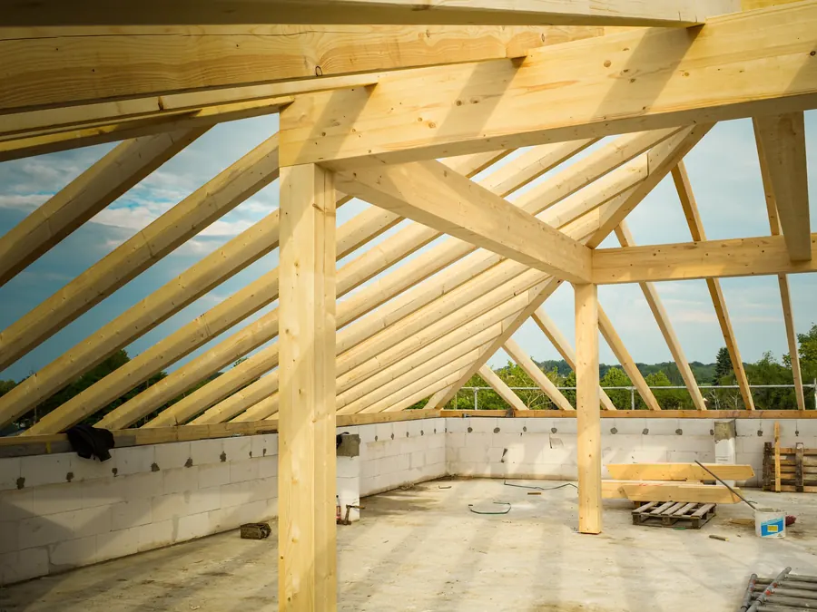
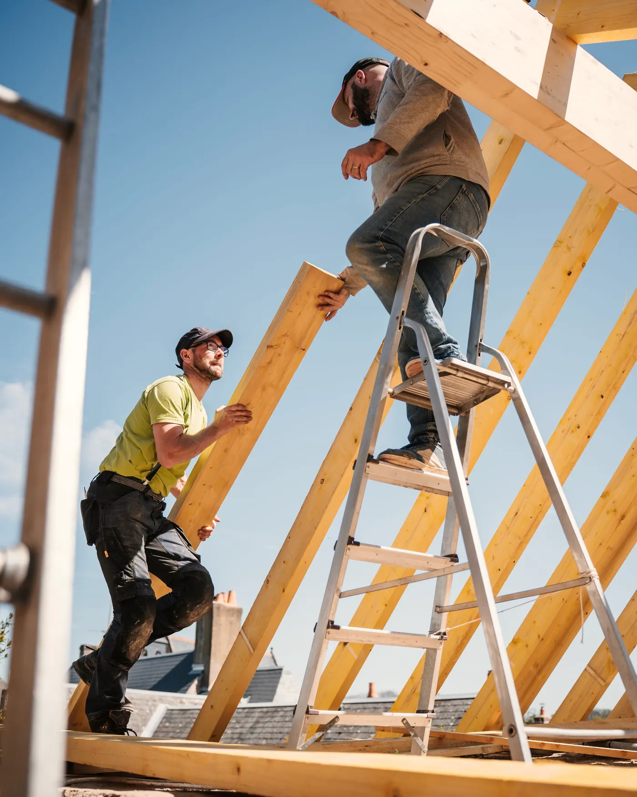
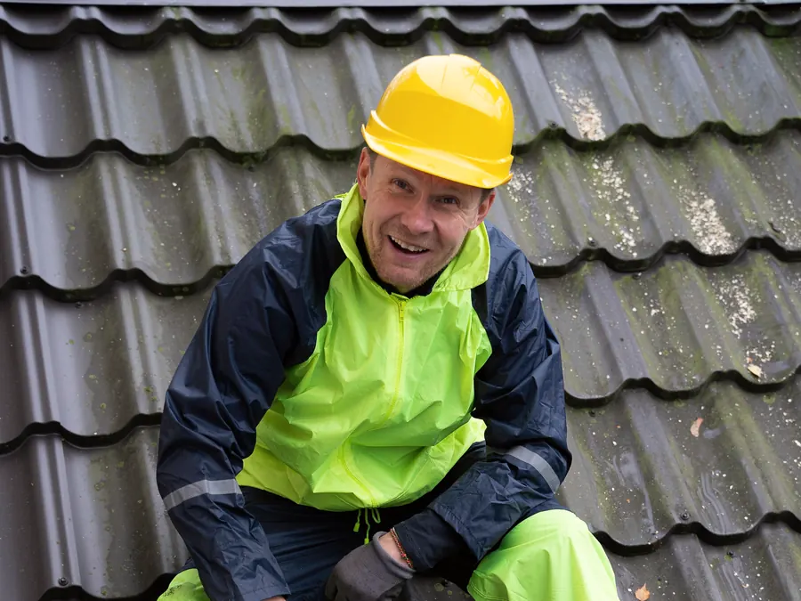
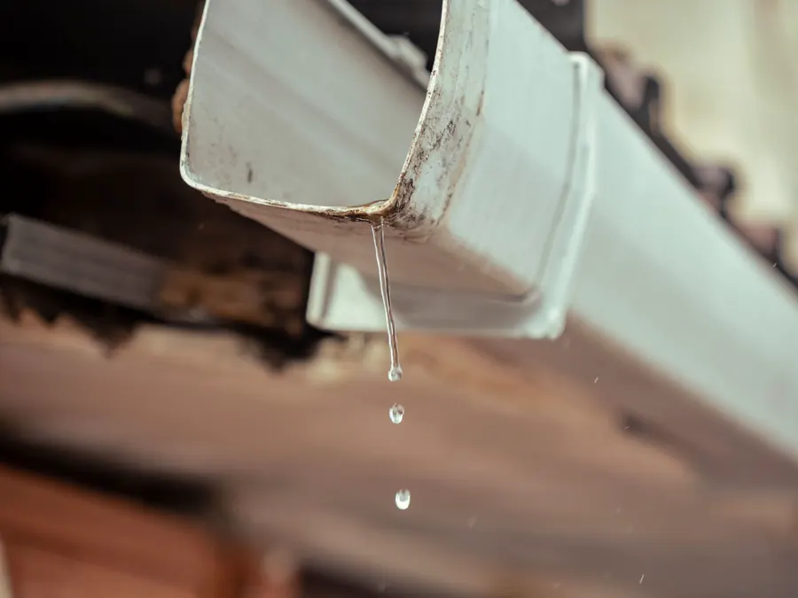
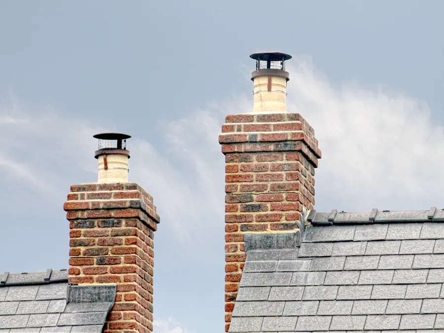
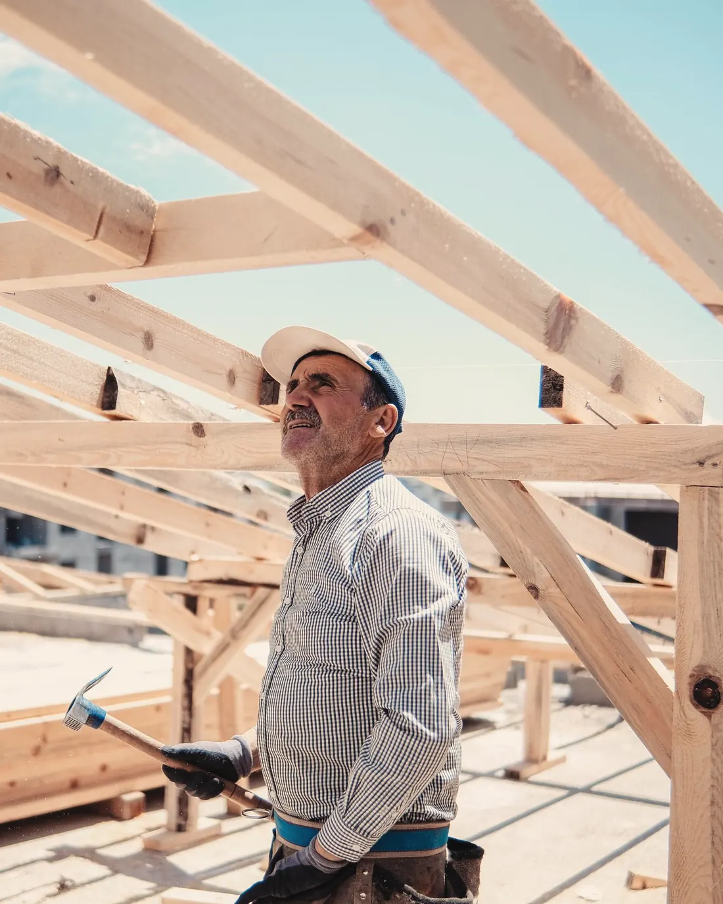
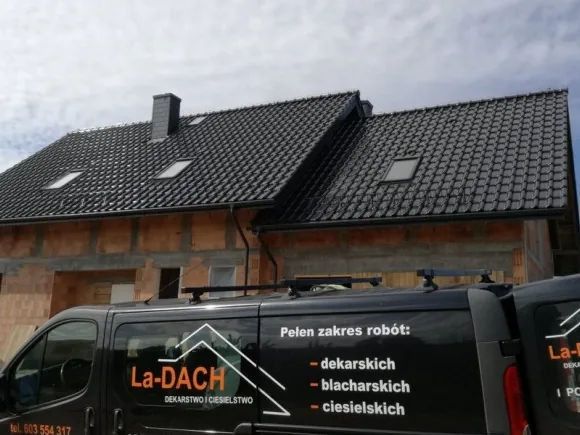
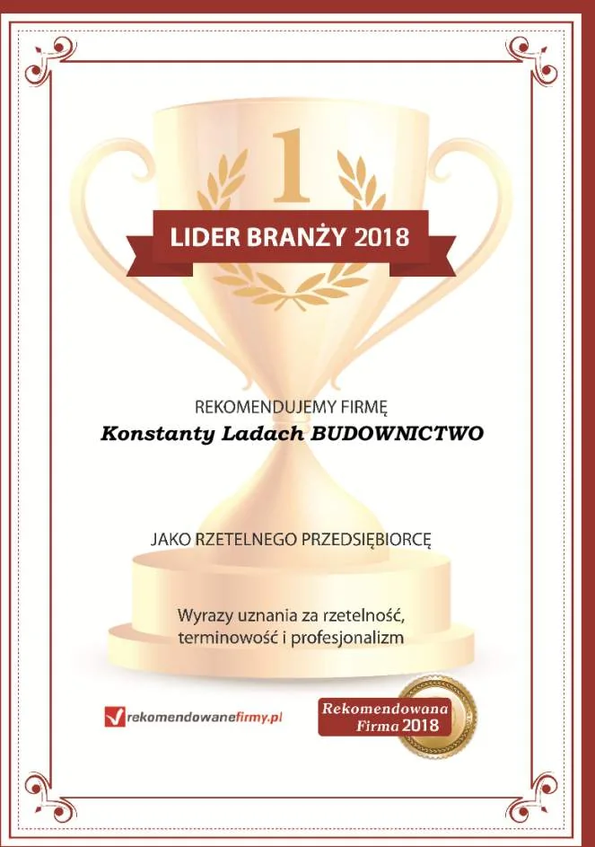
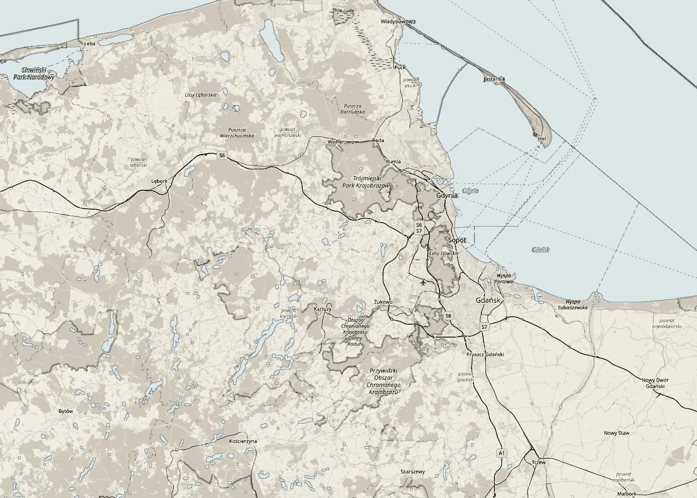

01
Więźby dachowe
Wykonujemy i montujemy drewniane więźby dachowe. Ciesielstwo to połowa naszej nazwy i podstawa każdego dachu.

Dekarstwo · Ciesielstwo · Blacharstwo
Rodzinna firma z Ustarbowa. Budujemy nowe dachy, remontujemy i konserwujemy stare: więźby, pokrycia, rynny i obróbki kominów. Dla domów, firm i instytucji.
01Usługi
Robimy cały dach: od konstrukcji, przez pokrycie, po rynny i obróbki. Zapewniamy kompleksową obsługę klientów indywidualnych, firm i instytucji.

01
Wykonujemy i montujemy drewniane więźby dachowe. Ciesielstwo to połowa naszej nazwy i podstawa każdego dachu.

02
Kryjemy dachy blachodachówką, blachą trapezową i papą. Używamy wyłącznie pokryć od uznanych, sprawdzonych producentów.

03
Wykonujemy i montujemy orynnowanie, wymieniamy stare rynny na nowe, żeby woda z dachu trafiała tam, gdzie powinna.

04
Robimy obróbki blacharskie kominów i miejsc, w których dach styka się z murem. To tam najczęściej zaczyna się przeciek.
02Jak pracujemy
Do każdego klienta podchodzimy indywidualnie. Zanim zaczniemy, wiesz, ile to kosztuje, kiedy będzie gotowe i z czego powstanie.
Zadzwoń albo napisz. Powiedz, czy chodzi o nowy dach, remont czy wymianę pokrycia, i gdzie stoi budynek.
Sporządzamy dokładną wycenę prac, żeby przed startem było jasne, ile kosztuje dach.
Ustalamy termin wykonania i uzgadniamy, z jakich materiałów powstanie dach.
Pracujemy sprawnie i precyzyjnie, specjalistycznym sprzętem i z zachowaniem norm bezpieczeństwa.

03Realizacje
Zdjęcia z galerii firmy: nowe dachy na domach jednorodzinnych i szeregowych. Kliknij, aby powiększyć.
04O firmie
Firmę dekarską La-DACH założył Piotr Ladach. Dziś prowadzi ją dalej jego syn, Konstanty Ladach. Na rynku dekarskim działamy od wielu lat, a naszymi zleceniodawcami są osoby prywatne, firmy i instytucje.
Pracujemy w oparciu o nowoczesne technologie i wysokogatunkowe materiały. Oferujemy zarówno tradycyjne, jak i nowoczesne rozwiązania, a każde zlecenie traktujemy priorytetowo.
Dekarstwo to nasza pasja.


05Gdzie pracujemy
Siedziba firmy jest w Ustarbowie w gminie Wejherowo. Dachy budujemy i remontujemy na terenie całego Pomorza.
ul. Lipowa 1, 84-200 Ustarbowo
woj. pomorskie

06Kontakt
Chętnie odpowiemy na pytania o pokrycia dachowe, doradzimy i omówimy szczegóły zlecenia, telefonicznie lub e-mailowo.